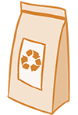

Dagelijks word er veel verpakkings materiaal weggegooid. Daarom spelen duurzamere theeverpakkingen een steeds belangrijkere rol. Traditioneel worden theezakjes en verpakkingen gemaakt van plastic en gelamineerd papier, wat moeilijk te recyclen is.
Veel theeproducenten stappen over op duurzamere opties. Een van de meest voorkomende zijn verpakkingen van composteerbare materialen, zoals theezakjes die gemaakt zijn van biologisch afbreekbare vezels zoals hennep of katoen. Deze materialen breken na gebruik snel af en voorkomen vervuiling. Daarnaast kan je ook het verpakkings materiaal vervangen door bijvoorbeeld kartonnen dozen of papieren zakken zonder plastic coatings.
Duurzame theeverpakkingen zorgen er niet alleen voor dat de kwaliteit van de thee behouden blijft, maar dragen ook bij aan een duurzamer en miliuebewust koopgedrag!
